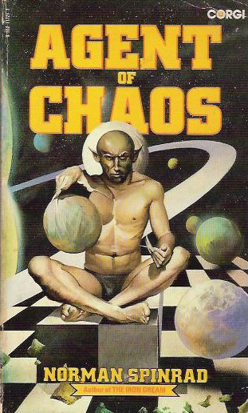

Thursday, May the 20th, 2010
back to: title, date or indexes
The Man Who Ate His Own Head is the new paperback potboiler by Pebblehead, the latest in his series of novellas featuring “Being Of The Future” David Blunkett. The fictional superperson ought not, of course, be confused with the Labour politician of the same name, though some people do get them mixed up. Much the same collision of political fact and speculative fiction occurs in Norman Spinrad's “agonizing science fiction adventure novel” of 1967, Agent Of Chaos, in which, to quote the back cover blurb, “The scene [is] Dome One, Mars. The terrible dictatorship ruling the planet was the Brotherhood of Assassins, and Boris Johnson, head of the Democratic League was plotting to overthrow the Hegemony and to restore democratic rule. The Hegemony, that mysterious group that controls the entire solar system, was now threatening to control the entire human race and render Man extinct! The entire galaxy in chaos; now bloodshed, then infinity…?” (You can read more about fictive Boris Johnson here.)

In The Man Who Ate His Own Head, the Being Of The Future sits down at some sort of futuristic dinner table, picks up his futuristic knife and futuristic fork, and tucks in to a futuristic meal piled on his futuristic plate. It is unclear what is so futuristic about the meal, as it consists of peas and gravy and jugged hare and cauliflower and cream crackers. Be that as it may, a robot valet appears at Blunkett's side and, through some form of futuristic mind control, persuades him to eat his own head. This he accomplishes, though not without difficulty, and Pebblehead is very sketchy about the precise sequence of events.
I will not give away the ending. Suffice it to say that the paperbackist unleashes some of his finest narrative pyrotechnics, and we are introduced, at the last, to the Being Of The Future's futuristic guide dog, Skippy, with the clear indication that this thousand-eyed zinc, tin, titanium, bakelite, and leather hound, stuffed with excelsior, will feature in the sequel, due out next week. Even as I write, Pebblehead is tapping away in his chalet o' prose, brow furrowed, pipe clenched in his infected teeth.
Hooting Yard on the Air, May the 20th, 2010 : “Bobnit Tivol : The Lost Interview” (starts around 20:52)